Game Design Document
GDD - Polícia e ladrão [PEGA]
Game Design Document renderizado como um pacote HTML offline a partir do documento Word original de PEGA.
Visão Geral
Fonte principal
Este HTML foi gerado a partir de Exemplos/GDD PEGA.docx. A versão Markdown normalizada está em source/gdd.md.
[Logo do Jogo]
Rick Ronda, um jovem aspirante a integrar a P.G.A de Larápolis não consegue passar nos rigorosos testes da agência. Diante desse revés, ele decide tomar as rédeas de seu próprio destino e funda a sua agência de segurança. No entanto, as coisas não se apresentam de maneira simples, pois a cidade está infestada de gangues determinadas a enriquecer facilmente. Elas estão dispostas a arriscar suas vidas ao se infiltrar e roubar qualquer estabelecimento em Larápolis. Agora, cabe ao nosso cadete empreendedor perseguir e deter essas gangues antes que consigam escapar com os valiosos prêmios.
O jogo é direcionado ao público masculino, especificamente para indivíduos a partir de 12 anos de idade. Trata-se de um emocionante jogo de ação projetado para a plataforma PC. O jogo oferece a possibilidade multiplayer local de um ou dois jogadores simultaneamente. A experiência do jogo estará disponível em inglês e português brasileiro. Prevê-se o aguardado lançamento para o ano de 2024, prometendo envolver os jogadores em desafios emocionantes na cidade de Larápolis.
Desafios de lançamento para Steam, Epic Games e Microsoft GamePass.
História e gameplay
Rick Ronda e Petra Patrol são um jovens ansiosos para ingressar na Polícia e Guarda Avançada de Larápolis (conhecida como P.G.A. Larápolis). No entanto, sua inexperiência no setor impediu a admissão na instituição PGA. Sem alternativas, decidem fundar sua própria empresa de segurança: a Proteção e Estratégia na Guarda de Ativos em Larápolis, também conhecida como P.E.G.A. Larápolis. Rapidamente, eles conquistaram um pequeno contrato no armazém da cidade.
O setor de segurança em Larápolis está em pleno crescimento, impulsionado pela necessidade cada vez mais premente de proteção devido ao mundo do crime que aflige os comerciantes locais. Nas primeiras semanas de trabalho, eles enfrentam sua primeira missão desafiadora: proteger um baú de barras de ouro no armazém, alvo das gangues locais. Sua missão é evitar que ladrões invadam o local, desencadeando uma intensa perseguição.
Navegando pelos corredores labirínticos, eles têm a responsabilidade de acionar as travas de segurança para evitar a fuga dos criminosos. Os ladrões são astutos, utilizando diversas artimanhas para escapar, como se esconder atrás de caixas, derrubar partes do ambiente para obstruir Rick e Petra e, em situações desesperadoras, sabotar as defesas do prédio.
Equipado com seu cassetete e seu quepe da sorte, o casal utiliza armas e dispositivos espalhados pelo armazém para capturar os ladrões, incluindo carrinhos motorizados e armas de choque. Conforme ele protege os bens de seus clientes, novos contratos surgem, tornando a tarefa de proteger locais cada vez maiores e desafiadoras.
Fluxo de jogo
HUB
- Cidade de larápolis com pontos fixos (esconder pontos mais avançados com nuvens) 1-2-3-2-1-Boss.
- Opções para retornar ao menu.
GamePlay
- Apresentação do cenário
- Mostra os pontos de entradas/saídas possíveis.
- Mostra os pontos de interesse (armadilha, local de power up, novidade do cenário)
- Mostra os itens de alto valor (Roubáveis).
- Ponto inicial do jogador.
- Exploração do jogador
- O jogador tem x segundos para explorar o mapa até a chegada do larápio.
- O larápio entra e é pego pela câmera de segurança (Screen splash tip), indicando quantos ladrões invadiram.
- HUD mostra o mini mapa, N# de larápios capturados/N# larápios, N# Itens recuperados e o tempo restante para a polícia chegar, PowerUp ativos.
- Perseguição do jogador
- Pega Power ups
- Atinge o larápio e o incapacita por x tempo.
- Se o larápio estiver com o item ele não fica incapacitado e deixa o item cair.
- O jogador pode levar o larápio para uma sala de contenção ou levar o item (Apenas um por vez).
- Se o jogador levar o item, os larápios podem mudar de status e tentar perseguir o jogador, ou escolher um novo item (provavelmente pela distância).
- O jogador atingido pelos larápios quando em posse do item, o larápio fica com o item e foge e o segurança fica inativo por x segundos.
- O item ou o ladrão na sala de contenção não voltam para o jogo. (talvez).
- Fim de fase
- A fase termina quando todos os larápios são levados para contenção.
- O tempo acaba e a polícia chega para levar os larápios presos.
- Se sobrarem larápios soltos antes do tempo eles fogem e geram prejuízos.
- Itens menores diminuem a classificação.
- Itens mais caros diminuem ainda mais a pontuação.
- Todos os itens de valor são retirados do prédio com sucesso.
- Tela de Classificação
- Número/tipo de larápios capturados
- Itens recuperados
- Itens perdidos
- Tempo restante
- Classificação (Estrelas - 0-3 dependendo da medida)
- Habilita novos locais
- Com X Classificações dá o direito de enfrentar o boss.
- Final do jogo
- Ganha a chave da cidade com direito a festa, balão e estátua do jogador na praça.
- Os larápios presos comemorando na cadeia lotada.
- Chefão promete retornar.
- Créditos finais.
Controles
Nesta seção, são delineadas todas as ações disponíveis para os personagens, incluindo aqueles controlados pelos jogadores por meio de um periférico de botões. Os botões são referenciados de acordo com o padrão Microsoft, onde o botão sul é designado como A e funciona como o botão de confirmação.
É importante notar que os valores mencionados nas descrições são considerados referências iniciais e estão sujeitos a alterações durante o desenvolvimento do jogo, visando proporcionar uma experiência aprimorada ao usuário.
Mover
Os personagens têm a capacidade de se movimentar em todas as direções enquanto estiverem no solo. O movimento é definido pela sua atual, que determina a e pode ser ajustado durante o jogo. Observe que a movimentação será obstruída por quaisquer objetos no jogo, exceto .
O jogador pode controlar essa ação Movimentação usando o Eixo Esquerdo ou D-Pad.
Impulso
Os personagens têm a opção de usar um impulso para obter um aumento temporário de em 1.5x. É necessário que o jogador tenha pelo menos 1 ponto de Vigor no momento da execução da ação e tenha um tempo de resfriamento para reutilizar a ação. A ação permanece ativa até que o jogador execute qualquer outra ação que não seja movimentar-se para frente ou pular, momento em que a ação de Impulso retorna ao padrão.
Fórmula do resfriamento: Bases de tempo (2) - (/)
O jogador pode acionar essa ação usando o botão Oeste (X).
Saltar
Os personagens têm a capacidade de saltar em todas as direções, permitindo-lhes alcançar áreas elevadas até 1.3 vezes a altura do próprio personagem, sem, no entanto, possibilitar a mudança de andar.
A altura do salto pode variar com base na do personagem, que adiciona seu valor multiplicado por 0.1 à altura base. Por exemplo, personagens com 3 de força têm um bônus de 0.3, saltando, assim, 1.6 vezes a sua altura.
Para determinar a inicial necessária para que o personagem atinja uma altura e uma distância em um salto, podemos seguir os seguintes passos:
- Altura do salto : Usaremos a equação do MRUV para a componente vertical do movimento:
- Distância do salto usaremos a equação do movimento uniforme
Onde:
= é a posição vertical no tempo , = é a posição inicial, = é a velocidade inicial (ou momentum inicial) e , = é a aceleração devida à gravidade
Movendo o personagem consegue saltar uma distância de 2x sua largura, pelo eixo central acrescentando o momentum.
O jogador pode usar esta ação usando o botão: (Botão Sul - A)
Interagir
Os personagens têm a capacidade de interagir com outros personagens e objetos usando o botão dedicado de interação. O tipo de interação é determinado pelo objeto diretamente à frente do personagem, que entra em sua área de ação. Se mais de um objeto interativo estiver colidindo com o personagem, a prioridade é dada ao objeto mais próximo, indicado por uma linha ou efeito ao seu redor.
Cada interação tem um tempo de cadência (espera de uma ação para outra) de 1 segundo.
Interagir com Inimigo
Quando o jogador está em colisão com um objeto do tipo “inimigo”, uma ação diferente ocorre de acordo com o tipo e status do inimigo.
Interagir com Objeto
Quando o jogador está em colisão com um objeto do tipo “seguravel”, uma ação diferente ocorre de acordo com o status do inimigo. Cada ação possui um limite de tempo de espera entre um ataque e outro de 1 segundo.
Caso nenhum objeto de interação esteja na área do personagem, a interação será interpretada como um ataque, sendo o alcance e o efeito definido pelo objeto atualmente em posse do personagem, se o personagem está outro personagem a interação será interpretada como soltar o objeto.
O jogador pode acionar essa ação usando o botão Leste (B).
Pausar
Os jogadores têm a opção de interromper o fluxo do jogo, colocando-o em estado de pausa, permitindo o acesso a um menu externo. Nenhuma outra ação é permitida neste estado, exceto interagir com o menu. Ao sair desse estado, o jogo retorna à posição em que foi pausado anteriormente.
O jogador pode acionar essa ação usando o botão Pause (Start) para entrar e sair do estado de pausa.
Câmera
A câmera tem posição fixa e segue o personagem de uma distância determinada, movendo junto com o personagem numa perspectiva top-down.
Em jogo multiplayer local, a tela é dividida horizontalmente.
Referência de Câmera:
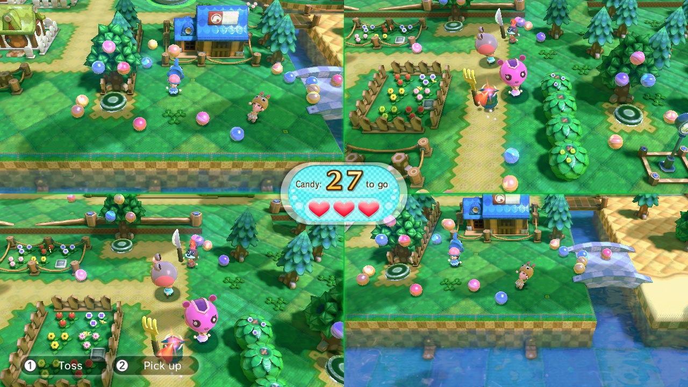
Principais conceitos do gameplay e características específicas da plataforma
Perseguição
Localizar as ameaças (larápios).
Impedir que eles alcancem os objetivos.
Recuperar itens roubados.
Multi níveis, escadas e acesso a outros andares dificultam ou facilitam a perseguição.
Busca por melhores “power-ups, e “armadilhas” de cenário.
Guia de direção com pontos de interesse (localização e distância do larápio) Guia estilo Fortnite e Xenoblade (HUD)
Gerenciamento de Prisões
Quando o larápio é pego, ele fica imovel por um tempo, se deixado para trás ele pode voltar a ativa, ou ser levado para uma “Cela” e ficar inativo.
Recuperar os itens roubados muda o gameplay, se o jogador estiver em posse de um item de valor, os ladrões vão tentar tomar o item dele, até que o guarde em um lugar seguro (Cofre).
Larápios
Os ladrões pertencem a grupos que conferem habilidades distintas, dificultando sua captura, facilitando sua invasão ou facilitando sua fuga.
Alguns tipos de ladrões podem acionar as armadilhas de cenário.
* Outros podem gerenciar suas próprias armadilhas.
Cenário
No cenário terá alguns Power Ups que melhoram as suas habilidades (velocidade, ataque, mobilidade, captura etc..)
No cenário algumas áreas possuem efeitos (armadilhas/segurança) como criar obstáculos, alarmes e câmeras, etc.
O cenário também gerencia suas peculiaridades temáticas, além do seu design único (labirinto).
Power Up surgem aleatoriamente (em áreas específicas) e são uso único.
As armadilhas e recursos do cenários são colocados em locais pré determinados, e podem ser acionados ou desligados a qualquer momento. (alguns são de uso único)
Multiplayer
Tela dividida, os jogadores não tem fogo amigo, porém podem colidir, e as armadilhas de cenário ainda afetam mesmo ativadas por eles.
Classificação
Conferem “pontos”
Concluir a fase em menos tempo
Capturar a maior quantidade de larápios
Recuperar/Manter Itens roubados
Mundo do jogo
A cidade de Larápolis é um ambiente fictício imerso no domínio do crime, apresentando uma atmosfera cartunesca que define seu cenário único. O ciclo de dia e noite é fixo, com cada fase determinando se ocorrerá durante o dia ou à noite, embora a representação visual da cidade permaneça sempre durante o dia.
No coração dessa cidade fictícia, encontramos os Larapolitanos, NPCs que desempenham papéis secundários nos cenários conforme necessário. Esses personagens contribuem para a vida cotidiana da cidade e adicionam camadas visuais ao mundo do jogo.
Dentro desse cenário, diversas gangues, cada uma com sua estética cartunesca distintiva, praticam seus crimes pela cidade. Seus membros se destacam por suas roupas peculiares e métodos de atividade criminosa, adicionando um toque de excentricidade ao submundo de Larápolis.
A presença da polícia oficial no jogo é limitada, agindo apenas para levar os bandidos capturados pelo jogador até a prisão da cidade. Este enfoque destaca a responsabilidade do jogador na manutenção da ordem e na captura dos criminosos.
Ao avançar no jogo, o(a) prefeito(a) se destaca como uma figura importante, aparecendo no final da jornada para entregar simbolicamente a chave da cidade ao jogador, reconhecendo seu papel crucial na restauração da ordem em Larápolis.
A cidade tem as seguintes construções:
| Local | Dificuldade | Reputação | Referências |
|---|---|---|---|
| Armazém | Um centro de distribuição com característica de galpão, caixas/caixotes, malotes, prédio administrativo, doca de carregamento, pátio de veículos. Escada vertical e andaimes, empilhadeiras | ||
| Shopping/Mercado* | lojas de departamento, corredores de lojas e produtos, ilhas, pilhas de latas quiosques, manequins, gôndolas, elevadores e escadas rolantes, carrinho de compras, cinema | ||
| Centro Empresarial | Salas de escritorio, baias, vasos, mezaninos, computadores, máquinas de bebida e salgado, mesas, cadeiras, dutos e portas, escrivaninhas, mangueira de incêndio, extintor e almoxarifado (vassouras, pano, balde, placas) NPCs trabalhando | ||
| Museu/Galeria | Galerias, estátuas esculpidas, estátuas de ossos, estátuas de cera, quadros, vasos, arte moderna/abstrata, artefatos antigos, vitrines de jóias, cortinas, faixas, organizador de filas | ||
| Club/Night Club | piscinas, bares, mesas, discoteca, palco, mesas, cadeiras, Npc garçons e pessoas dançando, espreguiçadeira, guarda-sol, quadra de tênis, passarela, cantores, dançarinas, banda. cercas vivas (como escada) | ||
| Hotel / Cassino | quartos, gôndolas, maleiros, elevador, escada comum, recepção, cozinha, restaurante, bar, salões, mesas verdes de jogo, auditório, mini golf. fonte de água, candelabros, luminárias, tapeçaria, placas luminosa, caça níqueis, roletas, capela, equilibristas, mágicos, foyer, academia | ||
| Banco / Casa da Moeda | caixas, cadeias, organizador de fila, cofre, impressoras (pequenas e grandes), malote, empilhadeiras, foyer, luminárias de corda, grade, escritórios, gaveteiros/cofre, pilhas de dinheiro, ATM | ||
| Aeroporto | aviões, pista de pouso, torre, carros de transporte, escadas de acesso, salão de embarque, detector de metal, pista rolante de mala, achados e perdidos, cofres, celas, escadas rolante, elevador, Jetway, sala de espera | ||
| Fazenda | Casa, celeiro, animais, curral, plantação, silo, tratores, colheitadeiras, lagos, jardim, cercas, viveiros, caminhão, granja, pasto, | ||
| Porto/Navio | navios, pier, cordas, guindastes, containers, armazéns, boias, coletes. Interno do navio: Piscinas, quartos, bares, cinema, proa, popa, laterais do barco, bote salva vidas, sala de máquinas | ||
| Presídio | Celas, andaimes, cercas, torres, grades, refeitório, muro, escritórios, solitárias, pátio, quadra, arames farpados, capela, sala diretor, visita, sala dos telefones, horta, marcenaria, mercearia, farmácia, enfermaria | ||
| Centro de eventos (DLC) | colunas, quiosques, estandes, estantes de livros ou jogos, praça de alimentação, auditório, palco de show, Faixas, bexigas, placas, sala de negócios, banheiro | ||
| Parque de diversão/Zoo (DLC) | roda gigante, animais, quiosques, bexigas, carrossel, montanha russa, praça de alimentação, administração, casa dos espelhos, bilheteria, catraca, carrinho elétrico, viveiros, terrário, aquário, casa do terror, Npcs, teleférico | ||
| Estação espacial (DLC) | ET, satélite, sala de descompressão, roupa de astronauta, space walking, sala de controle, compactador de lixo, sala de pod, sala cápsulas, área científica e área médica,área de doca, sala de máquinas |
Armazém
Um centro de distribuição com característica de galpão, caixas, malotes, prédio administrativo, doca de carregamento, pátio de veículos.
Armadilhas (comuns)
Armadilhas (específica do cenário)
Pontos de cofre
Ponto de cela
Pontos de power up
Objetos “roubaveis” (inventário do cenário)
Número de andares
Entradas do larápio
Quantidade de larapio
Nível de Dificuldade: #n
Nível de Reputação: #n
Inimigos e Chefões
Os "Larápios" são grupos de criminosos em Larápolis, cada um com suas características distintas e habilidades únicas. Estas gangues, especializadas em furtos, emergem como o principal obstáculo para os jogadores durante sua jornada na cidade.
Cada gangue de "Larápios" possui uma identidade própria, refletida em suas táticas, modus operandi e vestimenta cartunesca. Suas habilidades específicas desafiarão os jogadores, exigindo estratégias variadas para superar esses obstáculos ao longo do jogo.
A expertise dessas gangues em furtos torna-as uma presença constante e ameaçadora, representando o desafio primordial que os jogadores enfrentarão ao tentar manter a ordem na cidade de Larápolis. A captura e neutralização dessas gangues se tornam objetivos fundamentais para a restauração da segurança na metrópole.
Os Trapalhões do Crime:
Este excêntrico grupo criminoso, conhecido como "Os Trapalhões do Crime", é uma mistura de caótica comédia e crimes engenhosos em Larápolis. Composto por quatro tipos distintos de bandidos, esse grupo cria um pandemônio hilariante na cidade.
Cores:
Cinza Listrado: Neutralidade, discrição.
Vermelho Básico: Energia, paixão.
Descrição Geral:
Uma gangue de ladrões desajeitados que sempre acabam se metendo em confusão. Eles são como os personagens de desenhos animados, constantemente cometendo erros bobos, mas de alguma forma conseguem realizar os roubos.
Ladrões Listrados (Striped Thieves)
Esses membros, vestidos com trajes listrados, são os ladrões comuns do grupo. Suas ações são caricatas, inspiradas nos personagens clássicos dos quadrinhos. Apesar de suas habilidades simples, eles adicionam um toque de humor às situações de crime.
Ladrões Molhados (Soaked Thieves)
Os Ladrões Molhados são um pouco mais inteligentes, utilizando artimanhas inspiradas em clássicos cinematográficos. Suas estratégias envolvem situações mais elaboradas, desafiando os jogadores a superarem obstáculos engenhosos.
Capangas Atrapalhados (Bumbling Goons)
Esses capangas, com sua referência nos Minions, formam um grupo cômico e desastrado. Enquanto seguem as ordens do chefe, suas ações muitas vezes se transformam em momentos engraçados, adicionando um elemento lúdico às atividades criminosas.
Marombas Ameaçadores (Threatening Brutes)
No comando, os Marombas são fisicamente imponentes, inspirados em figuras como Brutus do Popeye. Liderando com força bruta, eles representam a ameaça central do grupo, exigindo dos jogadores estratégias mais complexas para superar seus desafios.

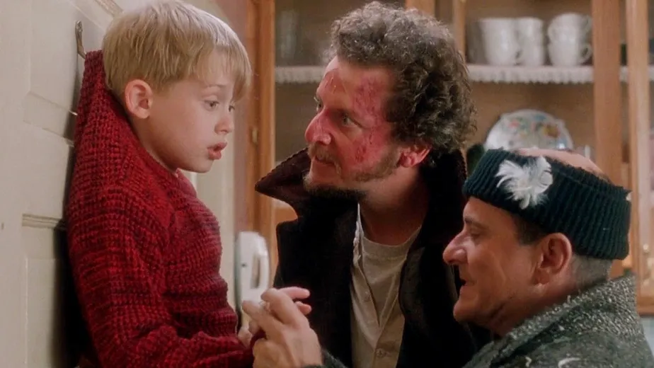
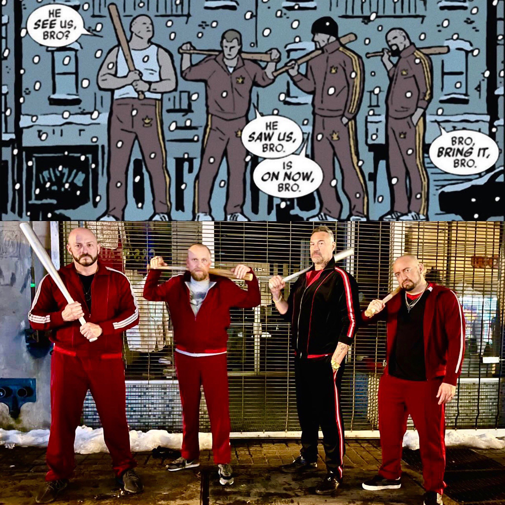

Concepts
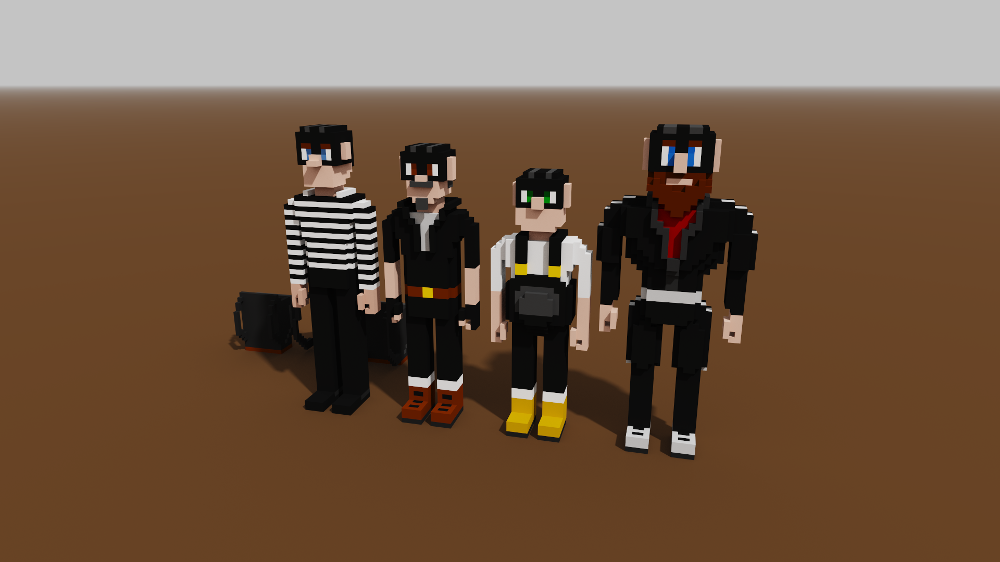
Os Incríveis Larápios
Este peculiar grupo criminoso, "Os Incríveis Lárapios", adota a vida circense como sua temática. Por trás da aparência festiva, esconde-se uma gangue de bandidos engenhosos que utilizam a confusão de sua aparência e métodos como parte integrante de suas estratégias criminosas.
Cores:
Vermelho Carnaval: Energia, ação.
Amarelo Dourado: Alegria, destaque.
Trupe Trapatapa
Os membros da Trupe Trapatapa são palhaços ultrajantes que usam narizes vermelhos, sapatos enormes e cabelos coloridos. Suas ações, embora criminosas, são executadas de maneira pastelão, com esquetes cômicos que precedem seus golpes. Podem, por exemplo, soltar confetes antes de um roubo.
Os Malabaristas da Malandragem
Descrição: Vestidos com roupas listradas e cartolas, os Giradores Equilibristas são malabaristas especializados em ilusões e enganos. Eles usam bolas de malabares como distratores, lançando-as no ar enquanto cometem suas travessuras.
Os Mimiquetes
Os Mimiquetes são mestres em disfarces e movimentos teatrais. Eles se camuflam entre os objetos, realizando pequenas peças de comédia antes de realizar suas ações criminosas. Utilizam gestos exagerados e expressões faciais para confundir e entreter enquanto roubam.
O Enigmático Mascarado
Diferente dos outros, o líder, O Enigmático Mascarado, não se disfarça, mas esconde sua identidade por trás de cabeças de pelúcia. Pode ser visto liderando seus comparsas com uma cabeça de urso em um momento, e na cena seguinte, usando uma cabeça de Mickey para manter todos perplexos. Suas aparições são sempre imprevisíveis, proporcionando um toque peculiar e misterioso ao grupo.
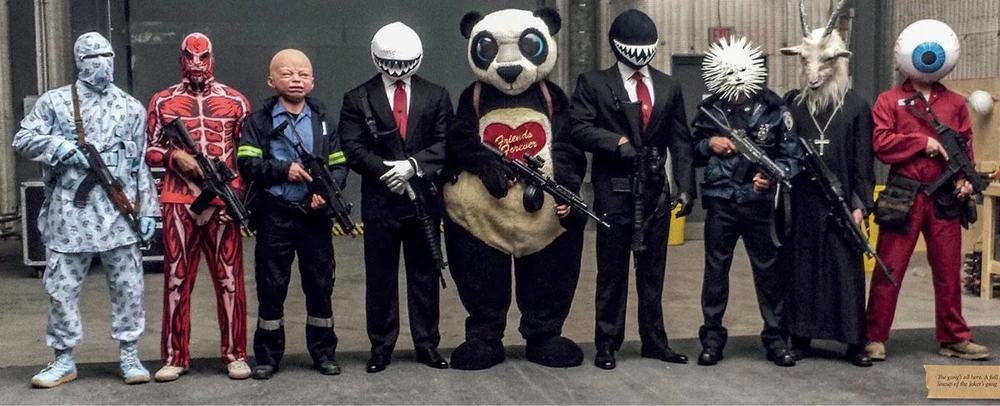

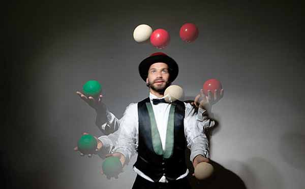
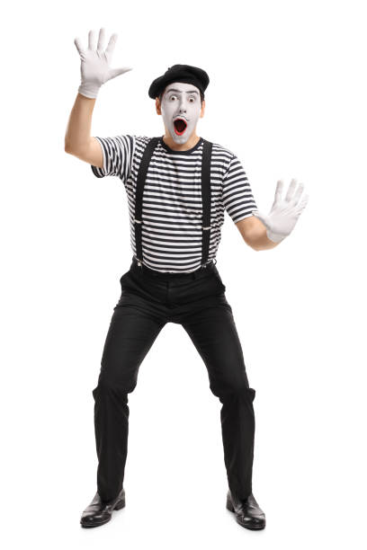
Concepts

Os Sem Leis
O grupo temível conhecido como "os Sem Leis" representa uma ameaça mais organizada e perigosa em Larápolis. Diferentemente dos Trapalhões do Crime, esses criminosos são bem treinados e seguem uma hierarquia rigorosa. Composto por quatro tipos distintos de ladrões, os Sem Leis instilam medo e desafio nos corações da cidade.
Descrição Geral:
Os Sem Leis são uma facção criminosa altamente organizada, com membros especializados e habilidades coordenadas. Seu design e táticas refletem uma abordagem mais profissional e ameaçadora em comparação com as gangues mais caóticas de Larápolis.
Cores:
Marrom Terracota: Terra, rusticidade.
Verde Floresta: Liberdade, natureza.
Os Cachaceiros
Este bando prefere tocaias e emboscadas, misturando a astúcia dos bêbados com a tenacidade dos cangaceiros. São habilidosos em ataques sorrateiros e emboscadas, tornando-os uma ameaça imprevisível para os jogadores.
Foras da Lei
Com um estilo que lembra os cowboys do velho oeste, esses criminosos atacam a distância com destreza. Inspirados pelos bandidos dos filmes de faroeste, eles são especialistas em emboscadas e ataques planejados.
Anarquistas
Este grupo adota uma abordagem mais caótica, refletindo as gangues de ruas e o estilo punk. Com um design mais futurista inspirado no cyberpunk, os Anarquistas preferem a ação direta e a confusão, criando um desafio dinâmico para os jogadores.
Nômades do Deserto
Liderando o bando, os Nômades do Deserto são andarilhos rápidos e habilidosos. Inspirados pelos andarilhos e bandidos dos contos orientais, vestem-se com trajes de deserto e usam lâminas com destreza, tornando-os oponentes formidáveis em combate. A referência é feita ao folclore de "Ali Babá e os 40 Ladrões".

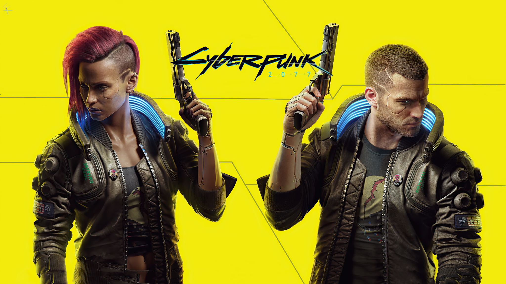


Concepts
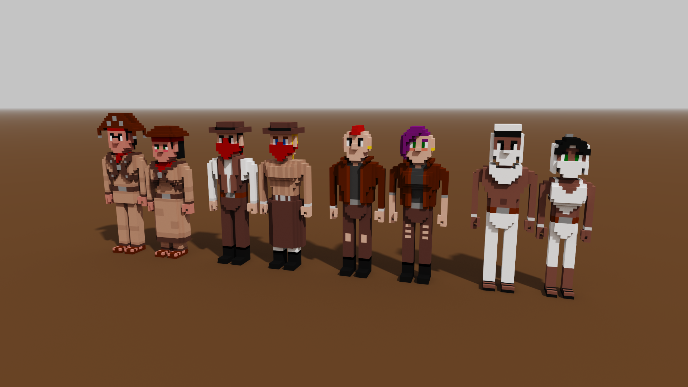
Os Cyber Piratas
Este grupo único de criminosos, conhecido como "Os Cyber Piratas", mescla o charme clássico dos piratas com a moderna astúcia hacker. Essa trupe tecnológica e marítima realiza seus crimes com uma abordagem inovadora e futurista.
Cores:
Azul Oceano: Profundidade, estabilidade.
Verde Neon: Inovação, ousadia.
Drone Caravela
Uma pequena caravela voadora, o Drone Caravela é equipado com tecnologia avançada de hacking. Seu design é uma homenagem às velhas caravelas dos piratas, mas suas habilidades são totalmente modernas, roubando informações e invadindo sistemas com agilidade.
Drone Pirata Assistente
Este drone tem a aparência de um peão de xadrez, mas veste-se como um assistente de pirata. Ele é especializado em invadir redes e sistemas, utilizando suas habilidades de hacking para criar distrações e abrir caminho para a trupe.
Papagaio Pirata
Um papagaio com uma reviravolta tecnológica, esse membro da trupe veste-se como um humano pirata robusto. Sua cabeça é a de um papagaio, enquanto o corpo é modelado como o de um pirata tradicional. Este papagaio é capaz de interagir com sistemas de segurança, proporcionando acesso e informações valiosas.
Capitão Hacker (Cpt. Hook):
O líder carismático e habilidoso da trupe é o Capitão Hacker. Inspirado no icônico Capitão Gancho, ele adapta seu visual para o mundo cibernético. Com um gancho cibernético substituindo sua mão original, ele lidera os Cyber Piratas com maestria, navegando pelos mares digitais em busca de informações valiosas e riquezas virtuais.

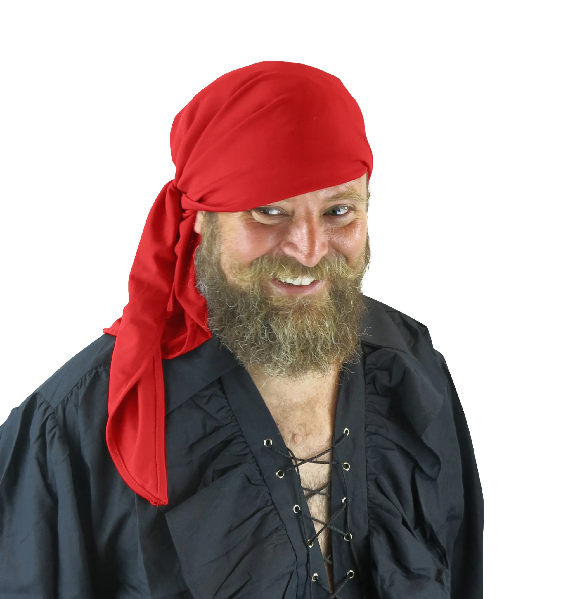

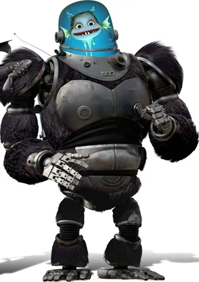
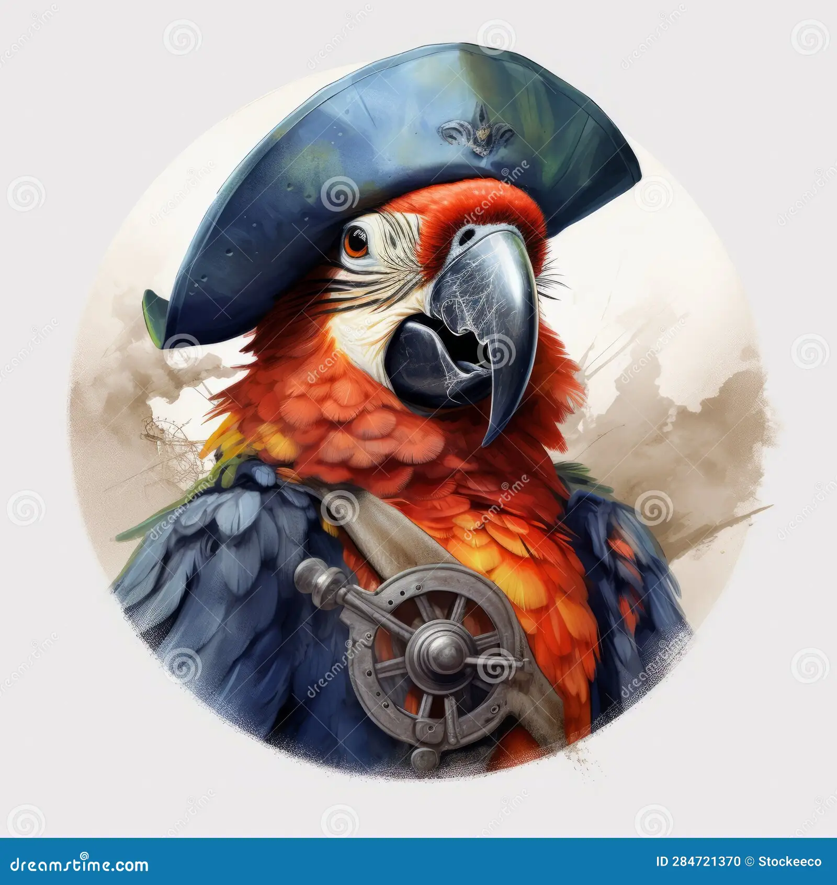
Concepts
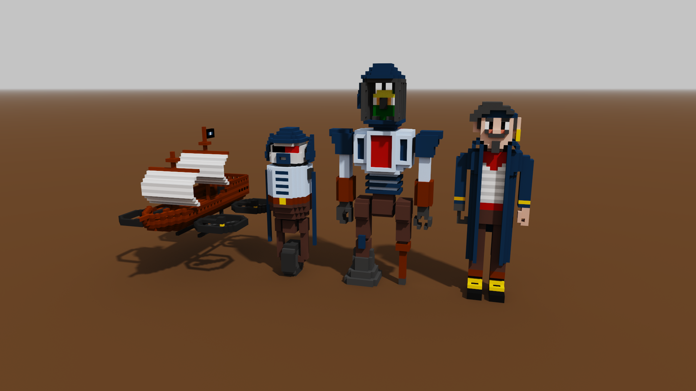
Os Fantasmas da Noite
Nas profundezas da noite, surge um grupo sinistro conhecido como "Os Fantasmas da Noite", composto por criaturas lendárias que se uniram em um pacto sombrio para aterrorizar a cidade de Larápolis. Cada membro deste grupo aterrorizante emprega suas habilidades sobrenaturais de maneiras nefastas, transformando a tranquilidade da noite em um reinado de caos.
Cores:
Roxo Profundo: Mistério, espiritualidade.
Azul Noturno: Calma, serenidade.
O Fantasma Noturno
Deslizando entre as sombras noturnas de Larápolis, o Fantasma Noturno é uma figura espectral envolta em um lençol etéreo. Seu corpo incorpóreo exibe um brilho sob a luz da lua, e um rosto sem traços distintos flutua misteriosamente sob o tecido translúcido. Escolhendo o lençol como uma vestimenta que oculta uma presença sobrenatural, o Fantasma Enigmático cria uma imagem que semeia confusão e medo, deixando um rastro de arrepios e lendas urbanas por onde passa.
O Lobisomem Dentinho
Sob o brilho pálido da lua cheia, o Lobisomem Dentinho assume sua forma bestial, tornando-se uma força imparável na busca por seus objetivos criminosos. Suas emboscadas noturnas são como um pesadelo, deixando a cidade em suspense constante.
Os Vampiros Pálidos:
Deslizando pelas sombras sociais, os Vampiros Pálidos usam sua sedução hipnótica para infiltrar-se em eventos exclusivos. Subjugam suas presas, sugando-lhes a energia vital enquanto se ocultam sob o manto da noite, deixando um rastro de confusão e fraqueza.
A Mumia Maldita:
A Mumia Maldita e líder astuciosa, emprega seus poderes místicos para desorientar e subjugar. Desativar sistemas de segurança com um gesto, controla mentes influentes e deixa sua marca de desespero por onde passa. Seus planos são arquitetados nos pergaminhos do passado, guiando sua trupe para aterrorizar Larápolis.
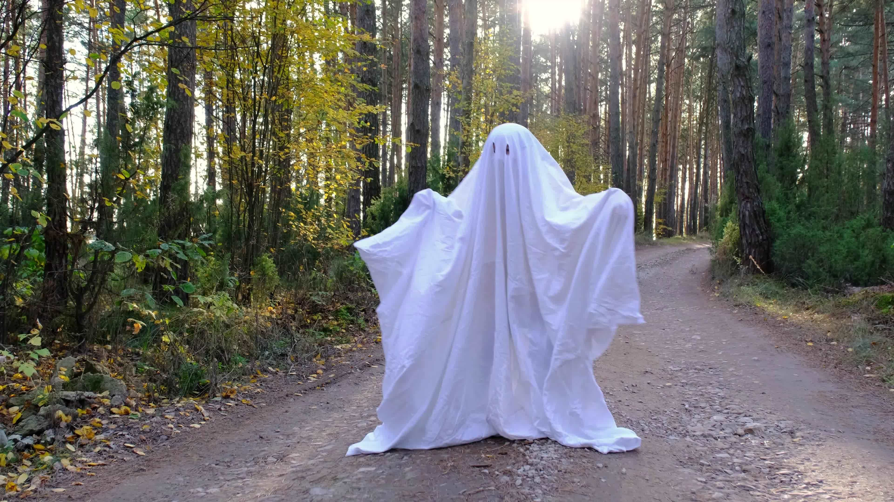
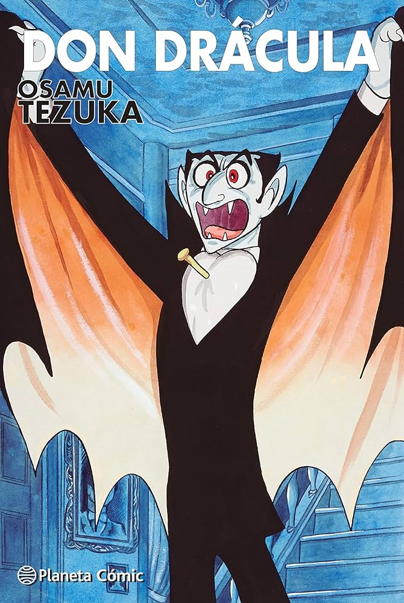

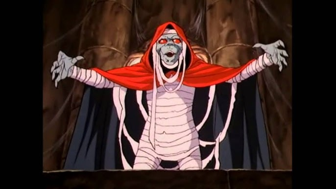
Concepts
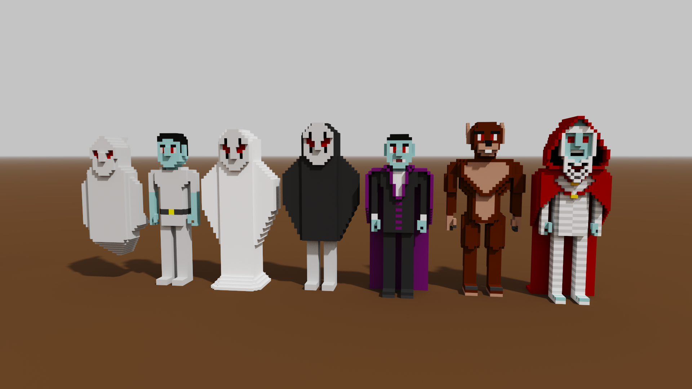
A Tríade da Realeza Opulenta
Esta tríade de criminosos, conhecida como "A Tríade da Realeza Opulenta", é única não apenas por seus métodos refinados, mas também por seu código de ética e estilo inigualável. Cada membro incorpora uma faceta única da elegância enquanto cometem seus crimes.
Cada membro da Tríade segue seu próprio código de ética, tornando-os uma força a ser reconhecida, não apenas pela sofisticação de seus métodos, mas também pela intrincada dança entre o crime e o estilo.
Cores:
Preto Noturno: Elegância, sofisticação.
Dourado Rico: Luxo, exclusividade.
Os Clã de Lótus Ninja
Vestidos em trajes de seda negra e máscaras intrincadas, o Clã de Lótus Ninja são mestres da furtividade. Utilizam suas habilidades ninja para realizar roubos precisos, desaparecendo nas sombras antes que alguém perceba sua presença.
Os Larápios Mascarados
Inspirados pelos lendários ladrões como Lupin, esses criminosos são vestidos com trajes sofisticados e máscaras intrigantes. Suas ações são sempre envoltas em mistério, deixando para trás pistas enigmáticas que desafiam até mesmo os investigadores mais astutos.
Os Cavalheiros
Liderando a tríade estão os Rei da Máfia: Os Cavaleiros, que canaliza a elegância do crime à moda antiga. Seu traje impecável, combinado com sua postura imponente, inspira respeito. Ele comanda a trupe com uma mistura de charme e astúcia, orquestrando golpes elaborados com precisão.

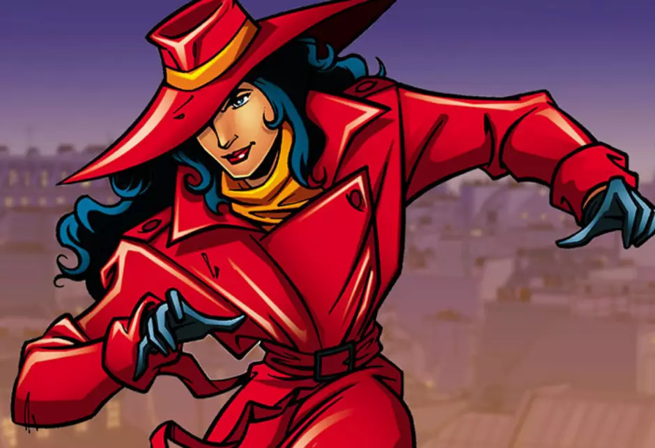

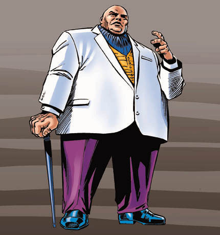
Concepts

Os Larápios das Galáxias
De regiões além da atmosfera terrestre emergem "Os Larápios das Galáxias", uma horda alienígena sedenta por recursos valiosos que escolhe Larápolis como seu campo de saque. Cada integrante dessa raça cósmica traz consigo habilidades distintas e uma propensão incontrolável para o crime interestelar.
Cores:
Azul Ciano: Representa confiança, tecnologia avançada.
Prata: Simboliza modernidade e futurismo.
Veloxlins
Seres pequenos, ágeis e incômodos como uma praga, esses Ets Menores invadem locais valiosos, desaparecendo nas sombras antes que a cidade perceba sua presença.
Cognitrons
Alienígenas maiores e dotados de conhecimento científico, esses extraterrestres utilizam tecnologia avançada para neutralizar sistemas de segurança e realizar roubos complexos, deixando para trás pistas enigmáticas de sua presença.
Furiosoids
Uma gangue de xenomorfos irracionais e criminosos, criaturas alienígenas que invadem a cidade com brutalidade e imprevisibilidade, deixando um rastro caótico por onde passam.
CryoSpectra
À frente da invasão está o aberrante CryoSpectra, uma criatura formada por metal e gelo. Sua estrutura alienígena única confere-lhe a capacidade de metamorfose e camuflagem, tornando-o um líder implacável que deixa um rastro gélido de destruição por onde passa.


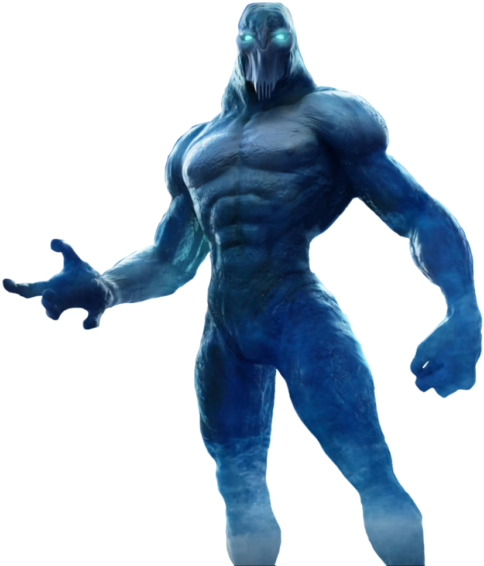
Mecânicas e power ups
1) Escolha de personagem
Duas opções do mesmo padrão, duas skins.
2) Atributos
Os atributos, representados por números, são essenciais para determinar as habilidades de cada personagem. Embora esses valores não sejam explicitamente revelados, eles desempenham um papel crucial na definição das ações dos personagens, influenciando diretamente ou indiretamente a jogabilidade. O jogador pode aprimorar esses atributos através de melhorias conhecidas como “”.
Os atributos são categorizados em dois grupos: e . Os atributos principais formam a base do personagem e têm a função de gerar e alterar os atributos secundários. Estes últimos, por sua vez, são responsáveis pelos cálculos que definem diretamente as habilidades dos personagens.
Tabela de Referência:
2.1) Base dos Grupos
Os grupos de adversários possuem um valor base de atributos que é aplicado a todos os seus membros, estabelecendo assim um nível de dificuldade geral que varia de 0 a 3. Este valor base é somado aos atributos principais para gerar ou modificar os atributos secundários.
Além disso, os integrantes do grupo têm uma classificação denominada “Patentes”. As Patentes servem para estabelecer a hierarquia dentro de cada grupo, criando variações nos atributos que diferenciam os adversários entre si. Essas variações determinam a dificuldade e a capacidade de cada adversário, tornando cada confronto único e desafiador.
2.2) Atributos Principais
Cada grupo possui um valor mínimo de atributo inicial, que é atribuído ao membro mais fraco do grupo (patente 1). Os demais membros recebem variações em seus atributos, mas nunca inferiores ao membro mais fraco. Portanto, o membro mais fraco representa o valor mínimo de cada atributo para o grupo.
2.2.1) Força
A força representa a capacidade física dos personagens. Embora não influencie diretamente a jogabilidade, o jogador pode aprimorá-la através de . Este atributo afeta diretamente as habilidades secundárias: e .
Cor: Vermelho: #FF0000
2.2.2) Agilidade
A agilidade reflete a velocidade dos personagens e influencia diretamente a jogabilidade em termos de mobilidade do personagem, como sua velocidade de movimento. O jogador pode aprimorar este atributo através de . Este atributo afeta diretamente a habilidade secundária: .
Cor: #00CED1 (Verde-água)
2.2.3) Presença
Este atributo, exclusivo dos inimigos, influencia suas reações e uso de habilidades. Representa a presença de espírito ou coragem do personagem, influenciando diretamente a jogabilidade no do inimigo.O jogador pode aprimorar este atributo através de . Este atributo afeta diretamente a habilidade secundária:
Cor: #800080 (Roxo)
2.2.3.1) Teste de Presença
O teste de presença é realizado pelo inimigo para decidir se tem coragem de realizar ações ofensivas contra o jogador. O teste é realizado pelo seguinte algoritmo: subtrai-se a presença do jogador da presença do inimigo. Se o resultado for positivo, o inimigo “pode” realizar uma ação ofensiva; caso contrário, não pode realizar ações ofensivas.
2.2.4) Defesa
A defesa representa a capacidade de um personagem resistir aos ataques de outros personagens. Este atributo influencia diretamente a jogabilidade, reduzindo o dano recebido. O jogador pode aprimorar este atributo através de . Este atributo afeta diretamente a habilidade secundária: .
Cor: #000080 (Azul-marinho)
2.2.5) Proficiência
A proficiência representa a capacidade de um personagem interagir com objetos mais complexos do cenário, como portas trancadas e cofres. Este atributo influencia diretamente a jogabilidade, afetando o tempo que o personagem leva para operar esses mecanismos. O jogador pode aprimorar este atributo através de . Este atributo afeta diretamente a habilidade secundária:.
Cor: #C0C0C0 (Prata)
2.3) Atributos Secundários
Os atributos secundários são diretamente influenciados pelos atributos principais e suas bases, exercendo um impacto direto na jogabilidade de acordo com suas respectivas funções.
2.3.1) Velocidade
A velocidade representa a mobilidade do personagem no jogo, sendo que quanto maior o valor, mais rápido o personagem. O jogador pode aprimorar este atributo através de . O cálculo é feito da seguinte forma: + Velocidade base (10).
Cor: #FFFF00 (Amarelo)
2.3.2) Dano Corpo a Corpo
O dano corpo a corpo representa o dano que o personagem pode infligir ao do oponente através de ataques de contato. O jogador pode aprimorar este atributo através de . O cálculo é feito da seguinte forma: + .
Cor: #8B4513 (Vermelho-escuro)
2.3.3) Dano à Distância
O dano à distância representa o dano que o personagem pode infligir ao do oponente através de ataques à distância. O jogador pode aprimorar este atributo através de . O cálculo é feito da seguinte forma: + .
Cor: #00008B (Azul-escuro)
2.3.4) Vigor
O vigor representa a resistência do personagem aos ataques dos oponentes. O personagem fica incapacitado quando o vigor é reduzido a zero. O jogador pode aprimorar este atributo através de . O cálculo é feito da seguinte forma: + + . Cor: #FFA500 (Laranja)
2.3.4.1) Recuperação da Vigor
O jogador pode recuperar coletando . Quando o personagem fica , ele precisa de um tempo para se recuperar. Este tempo é calculado da seguinte forma: Base de tempo máximo (5) - ( / ).
Cor: #FFA500 (Laranja)
2.3.4) Especial (SP)
O Especial (SP) representa o número de pontos que os inimigos podem utilizar para realizar ações especiais. Funciona como um limitador para que o inimigo não possa utilizar suas habilidades especiais de forma irrestrita. Este atributo não é recuperável. O cálculo é feito da seguinte forma: + + .
Cor: #FFD700 (Dourado)
2.3.6) Inventário
O Inventário representa a capacidade máxima de itens que o inimigo pode carregar simultaneamente. O cálculo é feito da seguinte forma: + .
2.3.7) Classe de Dificuldade
A classe de dificuldade representa o poder de cada inimigo e os pontos ganhos ao derrotá-los. Este valor será usado para quantificar a eficiência do jogador na captura dos inimigos durante a partida. O cálculo é feito da seguinte forma: soma de todos os e
3) Estados
Os estados representam os comportamentos ativos e únicos de cada personagem. Eles não são acumulativos, ou seja, um personagem só pode estar em um estado ou em outro, conferindo efeitos e condições específicas ao personagem.
3.1) Estados Gerais:
3.1.1) Ativo - Padrão
No estado ativo, o personagem está apto a realizar todas as ações disponíveis, incluindo a transição para outros estados.
Como entrar: O personagem entra no estado padrão se não estiver em nenhum outro estado.
Como sair: O personagem sai do estado padrão ao receber outro .
3.1.2) Segurando
No estado segurando, o personagem está em posse de algum objeto ou outro personagem. Ele pode se , , se beneficiar de power-ups e com outros objetos carregáveis. No entanto, ao interagir com um novo objeto carregável, ele troca o objeto que está segurando pelo novo e derruba o anterior. Se o objeto for interativo, ele executa a interação e também derruba o objeto que está segurando.
Como entrar: O personagem entra neste estado ao o usando a ação “” com a propriedade para ser .
Como sair: O personagem sai deste estado ao tornar o objeto segurado inativo (vazio), seja arremessando-o ou esgotando seu número de uso, e entra no estado . Ele também pode sair deste estado ao com um novo objeto segurável, trocando de objeto e entrando em um novo estado segurando com o novo objeto.
3.1.3) Carregado
No estado carregado, o personagem está sob posse de outro personagem e só pode entrar neste estado se estiver anteriormente nos estados ou . Neste estado, o personagem não pode recuperar seu e sua recuperação fica pausada até que saia deste estado.
Como entrar: O personagem deve estar no estado ou e ser interagido com outro personagem pela ação “”.
Como sair: O personagem deve ser descarregado pelo personagem que está carregando, seja trocando por outro item, ou colocado no chão usando a ação de “”, se não houver nenhum outro objeto para interação. O personagem retorna a sua última condição antes de estar “carregado”: ou
3.1.3) Caído
No estado caído, o personagem está impossibilitado de se , e . Neste estado, o personagem deve se recuperar usando a ação “Segurar o Botão” para voltar ao estado .
Um personagem caído tem seu “zerado” e inicia seu processo de por um periodo diferente de tempo indicado pelo item que aplicou o efeito, (este tempo não pode ultrapassar o tempo de recupearação do estado ).
Como entrar: O personagem deve ser alvo de uma ação que o torne partindo de outro objeto. O personagem não pode ser afetado se estiver nas condições: e .
Como sair: O personagem deve usar a ação “Segurar o Botão” para sair desta condição.
A ação “Segurar o Botão” consiste em segurar o botão de “” por um prazo determinado de tempo e retornar a condição . Interromper esta ação faz com que o tempo seja reiniciado. O cálculo é: Base de tempo máximo (2) - ( / ).
3.1.4) Incapacitado
No estado Incapacitado, o personagem está impossibilitado de realizar qualquer outra ação que não seja aguardar o carregamento dos seus pontos de . Os jogadores devem realizar a ação “Segurar o Botão” para acelerar a transição para o estado .
Como entrar: O personagem deve perder todo o seu pelos danos causados pelo ataque de outro jogador. O personagem não pode ser afetado se estiver nas condições: e .
Como sair: O personagem deve usar a ação “Segurar o Botão” para sair desta condição e retornar a condição . A ação “Segurar o Botão” consiste em segurar o botão de “” por um prazo determinado de tempo. Interromper esta ação faz com que o tempo seja reiniciado. O cálculo é: Base de tempo máximo (5) - ( / ).
3.1.5) Imune
No estado Imune, o personagem está impossibilitado de realizar outra ação de de e não pode ser um alvo válido de outros atacantes. Este estado é temporário e dura um número de segundos igual ao valor de sua .
Como entrar: O personagem deve ser por de um e sofrer uma redução de , sem entrar no estado de .
Como sair: O estado sai automaticamente após o término de sua duração ( dura um número de segundos igual ao valor de sua ), retornando o personagem ao estado .
3.2) Estados dos inimigos
Os inimigos podem estar em todos os , porém existem estados específicos para sua inteligência artificial.
Os inimigos podem transitar entre diferentes estados de acordo com seu sistema de "Goals". Se uma condição favorável surgir (como um esconderijo próximo durante uma fuga), o inimigo pode mudar para um estado mais vantajoso. Por exemplo:
Um inimigo em estado de "Fugindo" pode entrar em "Escondido" caso perceba que o jogador o perdeu de vista e exista um local de esconderijo por perto.
Um inimigo que estava "Furtando" pode decidir "Perseguir" o jogador caso ele tenha um item desejado e esteja dentro de sua área de percepção.
Isso significa que, apesar de todos os inimigos terem os mesmos estados disponíveis, as transições entre eles serão diferentes dependendo do peso de decisão de cada um, adicionando variedade à IA do jogo.
Os inimigos utilizam um sistema baseado em "Goals", no qual cada um possui uma tarefa principal (exemplo: roubar um item) e outras opções secundárias (como se esconder, atrapalhar o jogador ou atacar). Cada um desses objetivos tem um "peso" que influencia a tomada de decisão do inimigo, de acordo com o nível de dificuldade do jogo. Inimigos diferentes priorizam tarefas diferentes: alguns podem focar em fugir rapidamente com o item, enquanto outros tentam distrair ou atacar o jogador.
O sistema de sensores dos inimigos é padronizado, mas os pesos aplicados a cada decisão variam de acordo com o tipo de inimigo. Isso cria variações na jogabilidade, tornando as interações menos previsíveis e aumentando a necessidade de adaptação por parte do jogador.
3.2.1) Perseguindo
Os inimigos optam por perseguir o jogador como parte do estado inicial, este estado só pode acontecer se o jogador está em posse de algum pelo inimigo.
De acordo com o estado inicial e a patente do inimigo este estado tem pesos de escolha diferentes, podendo ter maior/menor chance de ser escolhido entre outros.
Como entrar: O jogador ao recolher um item de valor os inimigos são avisados.
Ele pode entrar neste estado com um ;
Ele pode entrar neste estado se estiver
Como sair: O inimigo sai deste estado assim que recuperar o item e o jogador não possui mais nenhum item em seu .
Ou quando o inimigo sofre ele vai fazer um e encerrar este estado, mudando para um outro.
3.2.2) Fugindo
Os inimigos optam por fugir do jogador como parte do estado inicial, este estado só pode acontecer se o inimigo for atacado ou estiver em posse de um pelo inimigo. Neste estado o inimigo vai tentar encontrar uma saída do cenário para concluir seu objetivo.
Neste estado é possível entrar em outros 2 estados especiais: e
De acordo com o estado inicial e a patente do inimigo este estado tem pesos de escolha diferentes, podendo ter maior/menor chance de ser escolhido entre outros.
Como entrar:
O inimigo rouba um e vai fugir com ele;
Sempre que envolver um ele pode escolher esta ação;
Quando percebe a ele pode escolher esta ação.
Como sair:
Sempre que envolver um e ele escolher outra ação;
Quando perceber a e ele escolher outra ação.
Entrando em um estado complementar como e/ou
3.2.3) Agressivo
Os inimigos optam por agredir o jogador como parte do estado inicial, este estado só pode acontecer se o inimigo for atacado ou estiver próximo do jogador. Neste estado o inimigo vai tentar causar dano ou ativar armadilhas contra o jogador.
De acordo com o estado inicial e a patente do inimigo este estado tem pesos de escolha diferentes, podendo ter maior/menor chance de ser escolhido entre outros.
Como entrar:
O inimigo sofre pelo jogador e pode revidar;
Sempre que envolver um ele pode escolher esta ação;
Quando percebe a ele pode escolher esta ação.
Como sair:
Sempre que envolver um e ele escolher outra ação;
Quando não percebe a escolhe outra ação.
3.2.4) Furtando
Os inimigos optam por furtar um como parte do estado inicial, este estado acontece na entrada do inimigo no cenário ou possuir mais de um . Neste estado o inimigo vai tentar encontrar e furtar os itens do cenário, e podem entrar em dois estados especiais e
De acordo com o estado inicial e a patente do inimigo este estado tem pesos de escolha diferentes, podendo ter maior/menor chance de ser escolhido entre outros se possuir itens de desejo disponíveis no cenário.
Como entrar:
Automaticamente ao entrar no cenário;
Sempre que envolver um ele pode escolher esta ação se houver um itens de desejo disponíveis;
Como sair:
Sempre que não houver mais itens de desejo disponíveis;
Sempre que envolver um e ele escolher outra ação;
Quando percebe a escolhe outra ação.
3.2.5) Escapando
Os inimigos optam por escapar do cenário como parte de seu estado final, este estado só pode acontecer se o inimigo estiver em posse de um item desejável e/ou inventário cheio e ou atingir o tempo crítico para completar o assalto. Neste estado o inimigo vai tentar sair do cenário o mais rápido e eficiente possível.
Como entrar:
O inimigo está em posse de seu ;
O inimigo está com seu cheio;
O do assalto foi alcançado;
Como sair:
Perder a posse do item desejado força um ;
Perder os itens do inventário força um
Porém se estiver dentro do tempo crítico a escolha preferencial (60%) será sempre manter o estado de escapando.
3.3) Estados Complementares
Estes estados só podem ser escolhidos apenas se o inimigo estiver em um estado específico, sendo eles complementares.
3.3.1) Escondido
Os inimigos optam por se esconder se estiverem em um dos dois estados: ou , se possuírem habilidade para tal. Neste estado o inimigo não é visível pelo jogador e não pode ser alvo dele ou de armadilhas até que saia deste estado complementar.
De acordo com o estado furtando, fugindo e a patente do inimigo este estado tem pesos de escolha diferentes, podendo ter maior/menor chance de ser escolhido entre outros.
Como entrar:
O inimigo deve possuir uma habilidade para tal, e interagir com um objeto que permita se esconder.
Ele pode escolher este estado de acordo com
Se Estiver no estado ou no estado ;
Como sair:
O jogador interage com o objeto que esconde o inimigo;
Ele pode sair do estado se ele estiver ;
Se possuir a habilidade para tal, atacando o jogador do esconderijo;
3.3.2) Disfarçado
Os inimigos optam por se disfarçar se estiverem em um dos dois estados: ou e possuírem habilidade para tal. Neste estado o inimigo é visível pelo jogador porém não possui as características de um inimigo padrão e pode ser alvo dele ou de armadilhas até que saia deste estado complementar.
De acordo com o estado furtando, fugindo e a patente do inimigo este estado tem pesos de escolha diferentes, podendo ter maior/menor chance de ser escolhido entre outros.
Como entrar:
O inimigo deve possuir a habilidade para tal, e ele torna-se um objeto interativo (seja ele NPC ou objeto de cenário)
Ele pode escolher este estado de acordo com
Ele deve estar em um dos estados: ou ;
Como sair:
O jogador interage com o objeto que o inimigo se disfarça (interagindo ou atacando);
Ele pode sair do estado se ele estiver ;
Atacando o jogador do esconderijo, se tiver habilidade para tal;
3.3.3) Ocultado
O personagem no estado “ocultado” esconde sua presença nas interfaces de detecção como as câmeras do e o . não sendo rastreados por ele. Ele ganha a característica “Oculto” durante este estado.
4) Personagens
A descrição das mecânicas específicas dos personagens.
4.1) Atacando
Para efetuar um ataque algumas condições devem ser atendidas:
- Realizar a ação com um alvo colidindo com o objeto do atacante.
- O alvo não pode estar nos seguintes estados:
- ;
- ;
- ;
- ;
- Imune
- O alvo deve ter valor de e não pode estar em ;
Atendendo estes critérios o ataque é realizado com sucesso.
4.1.1) Atingindo um alvo
Se o atacante realizou um com sucesso, o alvo é atingido e recebe um dano que corresponde a fórmula:
se ( - ) <= 0
dano = 1
caso contrário
dano = -
O Inimigo ao receber o dano deve reagir aos seguintes critérios:
- Se no do inimigo possuir ao menos 1 item:
- O inimigo derruba todos os itens que estão no seu inventário.
- O inimigo realiza um .
- Falhando o inimigo entra no estado:
- Passando ele escolhe uma ação de comportamento do tipo:
- Se o inventário do inimigo não possuir itens, o inimigo subtrai o valor do dano de seu total de .
- Se o valor resultante for menor ou igual a 0 o inimigo entra no estado .
- Se o valor resultante for maior que zero o inimigo faz um teste de presença.
- Falhando o inimigo entra no estado:
- Passando ele escolhe uma ação de comportamento do tipo: .
4.2) Segurando
O jogador pode interagir com objetos específicos (com indicação “segurável” da cena ao utilizar a ação de , o objeto em questão passa a ser pelo personagem. Estes objetos só podem ficar na posse do personagem 1 item por vez.
4.3) Inventariando
O jogador pode interagir com objetos específicos (com indicação “Itens”) da cena ao utilizar a ação de , o objeto em questão passa a ser contabilizado pelo do personagem. Estes objetos são ilimitados para o jogador e são contabilizados na interface .
4.4) Ativando Objetos de Cenário
O jogador pode com (com a indicação “interativo”) que ativam suas próprias funções de ação. Não é possível interagir nestes objetos enquanto o jogador estiver no estado , ou .
4.5) Recebendo PowerUp
O jogador interage com os power ups colidindo com objetos, os ativam suas funções ao serem coletados e podem ser cumulativos ou não.
5) Interações de cenário e armadilhas
Os personagens podem interagir com objetos no cenários para causar as mais diversas situações, cada uma com suas ativações e reações.
5.1) Restrição de movimento
Estas armadilhas visam reduzir o movimento dos personagens ou impedir o seu avanço, seja definitivo ou por tempo limitado.
5.1.1) Objeto para Derrubar.
Interagindo com o item, o objeto cai no chão e afeta a sua área. O personagem que colidir com a área do objeto entra no estado . O tempo de duração da é calculado da seguinte fórmula: Tempo base (1) - (/).
Referências: vasos, cadeira, rastelo.
5.1.2) Objeto para Derrubar em área.
Interagindo com o item, o objeto cai no chão afetando uma área na direção oposta do personagem, o tamanho do objeto define o tamanho da área que o efeito ocupa. O personagem que colidir com a área do efeito, entra no estado , o tempo de duração da é calculado da seguinte fórmula: Tempo base (2) - (/)
Referência: balde d'água, armário de livros, corda, alçapão
5.1.3) Interação de Mobilidade
com o item o personagem consegue uma mobilidade melhor seja movendo de um ponto a outro ou podendo usar o objeto como transporte.
Ao o personagem consegue atingir um outro ponto do cenário em um determinado tempo (ou instantaneamente) sem o controle do jogador;
Referências: Escadas, elevador (x segundos), andaime (Y segundos), dutos (z segundos) alçapão;
5.1.4) Portas
Estes itens visam diminuir a mobilidade dos personagens através de barreiras de acesso como portas. Estes objetos específicos (que possuem a indicação de “trancas”) podem ser fechados ou abertos de acordo com habilidade específica do personagem.
5.1.4.1) Tranca Simples
São objetos que bloqueiam um espaço de outro, e possuem o tempo de normal, todos os personagens podem interagir com ela, e ela tem o mesmo tempo de interação para todos.
5.1.4.2) Tranca Melhorada
São objetos que bloqueiam um espaço de outro, porém elas possuem um tempo de interação específico de acordo com sua complexidade. Os jogadores possuem um tempo maior que a tranca simples para interagir, e os inimigos devem possuir a habilidade de e levam um tempo maior para sobrepor estes obstáculos.
5.1.4.3) Trancas Digitais
São objetos que bloqueiam um espaço de outro, porém elas possuem um tempo de interação específico de acordo com sua complexidade. Os jogadores possuem um tempo maior que a e a para interagir, e os inimigos devem possuir a habilidade de e levam um tempo maior para sobrepor estes obstáculos.
5.1.5) Superfícies
São objetos que circundam e formam o cenário existem alguns tipos de paredes:
- Paredes Externas
- Paredes Internas
5.2) Restrição de Visibilidade
5.2.1) Restringir visão local
O objeto impede a visualização dos outros objetos em cena em uma determinada distância em torno do objeto.
Referência: Bomba de fumaça do ninja;
5.2.2) Restringir visão de área
O objeto impede a visualização dos outros objetos em cena em uma área expandida além do próprio objeto.
Referência: Apagar luz, fumaça em todo o ambiente.
5.3) Distribuidor de Power ups
5.3.1) Distribuidor com item específico;
Um objeto que gere um tipo específico de , que são gerados de tempo em tempo, mas são sempre os mesmos itens.
Referência: Mesa de café com donuts, ponto de no mapa
5.3.2) Distribuidor com item aleatório
Um objeto que gere (um ou mais) aleatórios, que são gerados de tempo em tempo, a qualidade dos power ups são definidos de acordo com seu distribuidor;
Referência: Caixa de “quebre aqui”, almoxarifado;
5.4) Objetos esconderijos
Estes objetos são de interação normal (geralmente de ) mas se possuírem uma identificação “esconderijo”, personagens que possuírem a habilidade de se , podem entrar no estado interagindo com eles.
5.5) Objetos de Salas
Estes objetos são áreas de cenário com propósitos específicos para o gameplay, elas possuem ações e verificações distintas de acordo com sua utilidade dentro do jogo.
5.5.1) Salas de Descarga
Salas de descargas são salas específicas para que o jogador guarde objetos para determinar seu .
5.5.1.1) Prisão
Local onde o jogador coloca os inimigos capturados;
O jogador interage com a sala para descarregar os inimigos, que só podem ser colocados dentro desta sala se estiverem no estado “”.
Os inimigos permanecem presos na sala até o término da fase, quando os policiais vêm buscá-los em definitivo.
5.5.1.2) Cofre
Local onde o jogador coloca os roubados e recuperados. Estes itens na sala não podem mais ser furtados pelos inimigos e estão aptos para serem medidos pela .
5.5.2) Sala de Itens de desejo
Local onde se inicia os dos inimigos, elas podem conter ou não armadilhas específicas para determinado cenário, ativadas no local ou via .
5.5.2.1) Armadilhas de Cenário
São armadilhas que só podem ser ativadas junto a e/ou de . Estas armadilhas afetam todos os personagens dentro da área da sala, retardando os inimigos a roubar o item.
O efeito prático é que os inimigos ficam em estado por um número de tempo específico enviado pela sala;
Esta ação é ativada usando um botão de ação, seja no ou em um . A armadilha é de uso único.
Referências: Alarme laser, armadilha de gás, armadilha de água;
5.5.3) Sala de Controle
Local onde o jogador pode verificar a presença dos larápios e ativar armadilhas específicas nas salas de itens de valor.
5.5.3.1) Verificando a presença dos larápios
O Jogador pode acessar as câmeras de segurança através da hud de .
5.5.3.2) Ativando armadilhas da sala de itens de desejo
O jogador pode ativar as interagindo com o específica da sala de itens de desejo, esta interação é indicada na câmera com um botão de ação, ativando a armadilha.
6) Power up
Os power ups são objetos que aplicam melhoria temporária ao jogador, estas melhorias são divididas em duas categorias, os itens de e os itens de
Os itens são representação de itens e/ou vestimentas para policiais/segurança, conferindo melhorias nos seus e /ou habilidades e efeitos especiais.
Os power-ups do jogo são exclusivos para cada nível. Isso significa que o jogador não carrega power-ups de uma fase para outra, garantindo um balanceamento entre desafios e vantagens em cada cenário. No entanto, melhorias permanentes de atributos podem ser adquiridas ao longo do jogo.
Power-ups possuem tempo de duração limitado e podem se acumular, desde que o limite do power-up específico não tenha sido atingido. Caso o jogador perca um power-up durante a fase, ele pode "respawnar" em pontos predefinidos para garantir o seu uso dentro daquele cenário. Essa abordagem permite criar desafios específicos para cada fase, sem permitir que power-ups de fases mais fáceis tornem fases mais avançadas menos desafiadoras.
6.1) Efeitos Passivos
Esta categoria de melhorias são aplicadas diretamente no jogador, sem que ele possa controlar seus efeitos, geralmente aumentando um .
Elas são representadas pelo ícone de quepe de polícia, cada uma em um formato e cores diferentes indicando sua utilização.
As melhorias tem um limite de aumento de cinco etapas, cada etapa aumenta um ponto no atributo indicado. Ao ativar, uma barra com cinco níveis aparece sobre o jogador indicando qual o nível atual de power up daquele atributo.
- Quepe: Força
- Coturno: Agilidade
- Distintivo: Presença
- Colete: Defesa
- Cinto: Proficiência
6.2) Efeitos Ativos
Esta categoria de melhorias são aplicadas diretamente ou indiretamente no jogador, porém ele precisa ativar seus efeitos usando a ação de para que ele possa controlar seus efeitos, geralmente ganhando uma nova habilidade que afeta outros personagens.
- Cacetete
- Aumenta o tempo de do atingido no .
- Algemas
- Ao usar a interação com este powerup o personagem não tem recuperação.
- Apito
- Tira os inimigos de uma área do estado ;
- Aplica o estado de ;
- Revolver de cola
- Prende o personagem no local por x tempo
- O tiro faz uma parábola para atingir o chão.
- Bolinha de Gude
- Tem a área imediatamente abaixo coberta pelos objetos que forçam o próximo personagem a entrar nela ficar no estado
- Pistola
- Uma arma com 3 cargas e aplica nos personagens
- Taser
- Uma arma com 3 cargas e aplica o no mesmo ataque que derrubou os itens do do inimigo (médio alcance).
- Buraco mágico
- Faz o personagem ser teleportado por um lugar aleatório do cenário.
- Armadilha de “urso”
- Aplica no personagem que perde
- Lanterna
- Remove a escuridão do ambiente, tirando os inimigos do estado “”
- Diciclo
- Aumenta a e a mobilidade do jogador por um período de tempo
- Este power up é aplicado pelo objeto funcionando como um , ao acabar ele fica indisponível por um período de tempo até retornar aplicar.
7) Inimigos
7.1) Atacando
Para o inimigo efetuar um ataque algumas condições devem ser atendidas:
- Um alvo deve estar colidindo com o objeto do atacante.
- O alvo não pode estar nos seguintes estados:
- ;
- ;
- ;
- ;
- ;
- O alvo deve ter um valor de e não pode estar em ;
Atendendo estes critérios o ataque é realizado com sucesso.
7.1.1) Atingindo um alvo
Se o atacante realizou um com sucesso, o alvo é atingido e recebe um dano que corresponde a fórmula:
se ( - ) < 0
dano = 0
caso contrário
dano = ( - )
O alvo ao receber o dano, deve reagir aos seguintes critérios:
- Se no do alvo possuir ao menos 1 item:
- O alvo derruba todos os itens que estão no seu inventário.
- Se o alvo for outro inimigo, o alvo realiza um .
- Falhando o alvo entra no estado:
- Passando o alvo escolhe uma ação de comportamento do tipo:
- Se o inventário do alvo não possuir itens, o inimigo subtrai o valor do dano de seu total de .
- Se o valor resultante for menor ou igual a 0 o alvo entra no estado .
- Se o valor resultante for maior que zero e o alvo for um inimigo, o alvo faz um teste de presença.
- Falhando o inimigo entra no estado:
- Passando ele escolhe uma ação de comportamento do tipo:
- Se o alvo for um jogador, o alvo fica imune a outros ataques por um número de tempo igual sua base (não conta power up).
7.2) Inventariando (Furtando)
Quando os inimigos estão furtando os itens de cenário, eles colocam estas peças em seu inventário limitado. O inventário do inimigo é representado por um saco de roubo. Sua aparência também identifica se o inventário está com algum item ( “saco médio” ) e se o inventário está completo(“saco grande”).
Quando o inimigo é atingido e possui itens no inventário, ele primeiro derruba todos os seus itens do inventário no chão, possibilitando qualquer outro personagem de roubá-los.
Na sequência ele faz um, para decidir qual comportamento ele irá tomar na sequência.
A quantidade limite é definida pela sua patente somando + .
7.2.1) Itens mundanos
No cenário existem itens que apenas os inimigos podem interagir para furtar, estes objetos são marcados com a características “Furtavel”, indicando que aquele item pode fazer parte do inventário do inimigo.
Estes objetos têm um valor menor que os , mas também são contabilizados para a do jogador.
Referências: Computadores, vasos, quadros menores etc.
7.2.2) Itens de desejo
No cenário em uma área específica existem itens que são prioridade para os inimigos e eles tentarão furtá-los com maior persistência. Estes objetos são marcados com a características “Furtavel” , indicando que aquele item pode fazer parte do do inimigo, e “Desejável” indicando que ele tem prioridade sobre todos os outros itens furtados, configurando como um do personagem, estes itens tem um peso maior no valor de do jogador.
Referências: Joia, Obra de arte, Tesouro.
7.3) Comportamentos
Além das ações básicas e dos estados possíveis para os inimigos, eles possuem comportamentos específicos para lidar com mudança de estados e escolhas de comportamento, geralmente refletem o seu estado inicial e suas reações.
7.3.1) Desejando
Cada inimigo tem uma missão que é roubar um item específico do cenário, este item é colocado como parte da sua lista de “desejo”. Se um item de desejo estiver listado, o comportamento deste personagem é modificado em caso de:
- Estiver mais próximo do Item de desejo que do jogador;
- O para o assalto é atingido.
- Outro personagem está em posse do item da sua lista de desejo (entre os NPCs eles sempre sabem quem está com o que);
As ações do personagem para se aproximar e/ou retirar o objeto do outro personagem ganha um peso maior nas suas escolhas se cumprir um ou mais itens da lista.
- Se o item desejável ainda estiver em sua ou no chão, o estado preferível (+60 %) é o .
- Se o Item desejável estiver em posse de outro personagem, o estado preferível (60%) é o
- Se o item desejável estiver em posse de outro personagem dentro de sua “ ele tem preferência (60%) pelo estado ;
- Se o item de desejo estiver em sua posse, o estado preferível (60%) é o .
- Se algum Item desejável de sua lista não estiver mais disponível para furto ele deve decidir entre os comportamentos:
- Procurar por outro item de desejo que não está em sua lista, que esteja está disponível no cenário;
- Furtar outros itens menores e/ou agredir outros personagens para adquirir itens;
- Fugir do Cenário
7.3.2) Percebendo outros Personagens
Os inimigos possuem uma área de visão que define sua capacidade de detectar o jogador. Quando o jogador entra nesse espaço, o inimigo pode realizar um teste de presença para decidir se deve reagir. Esse teste pode levar em conta variáveis como o nível de iluminação, se o jogador está em movimento rápido, se está escondido e a distância do inimigo. Dependendo do peso atribuído à percepção desse inimigo específico, ele pode agir de forma mais agressiva ou priorizar outra ação.
Os personagens podem perceber uns aos outros de acordo com as regras abaixo:
- Personagens pertencentes ao mesmo grupo, têm ciência de suas presenças sempre.
- Personagens pertencentes a outros grupos têm percepção parcial de sua posição:
- Se são ambos inimigos, eles se percebem sempre.
- Personagens inimigos percebem um jogador que compartilham da mesma área, exigindo um para mudanças de comportamento.
- O personagem perde a percepção do jogador quando se afasta dele um valor x e faz um novo teste.
O personagem que se afasta uma distância x do jogador é considerado fora de percepção e será testado apenas se a distância diminuir.
7.3.3) Reação à perda dos itens do inventário
Quando o personagem é atingido e possui algum item no seu inventário, todo seu inventário fica disposto no chão, no local que foi atingido, a partir disso o personagem deve tomar uma decisão para mudar de comportamento fazendo um .
Após derrubar os itens o personagem fica a outros ataque por um determinado espaço de tempo até voltar ao estado padrão, sugestão (2 segundos)
Superando o teste de presença o personagem possui um leque de opções para a mudança de comportamento, em especial quando perde seu inventário, podendo mudar para as seguintes condições, de acordo com seu grupo/patente ele pode ter pesos de escolhas diferentes (tabela) esta tabela dita o peso de cada escolha para esta reação exemplo:
(50%), (20%), (15%), (10%), (5%)
7.3.4) Reação à dano sofrido
Quando o personagem é atingido e tem o dano subtraído de seu vigor, o personagem deve tomar uma decisão para mudar de comportamento fazendo um .
Após derrubar os itens o personagem fica a outros ataque por um determinado espaço de tempo até voltar ao estado padrão, sugestão (2 segundos)
Superando o teste de presença o personagem possui um leque de opções para a mudança de comportamento, em especial quando perde seu inventário, podendo mudar para as seguintes condições, de acordo com seu grupo/patente ele pode ter pesos de escolhas diferentes (tabela) esta tabela dita o peso de cada escolha para esta reação exemplo:
(50%), (20%), (15%), (10%), (5%)
7.5) Habilidades
As habilidades são ações especiais que os personagens podem usar durante o jogo, estas ações são independentes e não são influenciadas por seus , as habilidades acontecem de forma automática de acordo com a escolha da AI do personagem, considerando , proximidade do e .
Estas habilidades podem ser usadas um número de vezes limitados ao atributo especial “”
7.5.2) Habilidades
Cada larápio pode ou não possuir uma habilidade que confere ações próprias que concedem personalidade e vantagens durante o jogo.
7.5.2.1) Disfarçando
Cada larápio que possui esta habilidade pode trocar sua aparência por um objeto e/ou outro NPC pertencente a uma lista previamente configurada com itens pertencentes a este cenário. O jogador pode reconhecer o disfarce pois o item não se encontra no mesmo lugar usual, ou mesmo por características físicas.
7.5.2.2) Escondendo
Cada larápio que possui esta habilidade pode com objetos no cenário com a característica “Esconder” mudando seu status para .
7.5.2.3) Tocaia
Cada larápio que possui esta habilidade pode com objetos no cenário com a característica “Esconder” mudando seu status para . Durante este estado ele fica alerta para a , quando o jogador se aproxima a uma distância x, o personagem faz um ataque sem , saindo do estado .
7.5.2.4) Invisibilidade
Cada larápio que possui esta habilidade pode ficar imperceptível para outros personagens por um determinado prazo de tempo de acordo com sua .
O personagem usando esta habilidade ainda pode ser percebida pois sua malha não está completamente oculta.
7.5.2.5) Atacando corpo a corpo
Cada larápio que possui esta habilidade pode realizar um que a outro personagem e esta ação faz parte do seu grupo de ações possíveis, ou seja sem essa habilidade o personagem não pode escolher realizar um ataque corpo a corpo.
Um ataque corpo a corpo exige que o objeto esteja sob posse do atacante e colida com o seu alvo, o alcance é medido através da arma utilizada.
7.5.2.6) Atacando média distância
Cada larápio que possui esta habilidade pode realizar um que cause a outro personagem e esta ação faz parte do seu grupo de ações possíveis, ou seja, sem essa habilidade o personagem não pode escolher realizar um ataque de média distância.
Um ataque médio exige que o objeto esteja sob posse do atacante e colida com o seu alvo, o alcance é medido através da arma utilizada.
7.5.2.7) Atacando longa distância
Cada larápio que possui esta habilidade pode realizar um que cause a outro personagem e esta ação faz parte do seu grupo de ações possíveis, ou seja, sem essa habilidade o personagem não pode escolher realizar um ataque de longa distância.
Um ataque longo exige que o objeto seja arremessado pelo atacante e colida com o seu alvo, o alcance é medido através da arma utilizada.
7.5.2.8) Imobilizado
Cada larápio que possui esta habilidade pode realizar um que força o estado de “” em outro personagem. O personagem atingido realiza o mesmo procedimento para . a mudança é cosmética utilizando uma animação característica para esta habilidade, pois depende das características físicas do personagem, ex: faixas da múmia.
7.5.2.9) Desativar Armadilhas
Cada larápio que possui esta habilidade pode desativar uma armadilha, ou seja, torna o objeto de armadilha inativo por um tempo determinado pela sua e complexidade informada pela armadilha.
7.5.2.10) Roubar outro Larápio
Cada larápio que possui esta habilidade pode retirar um de outro larápio que pertença a outro grupo de larápios, caso o item esteja na sua lista de itens desejados. Para esta ação basta um larápio colidir com outro, a mudança de itens se dá automaticamente e é demonstrada através de animação.
7.5.2.11) Arrombando portas
Cada larápio que possui esta habilidade pode transpassar (a inutilizando) usando sua física, Dependendo da força do personagem contra a dificuldade de abrir a porta, o personagem pode destruí-la e acessar outras sessões.
7.5.2.12) Trancando fechaduras
Cada larápio que possui esta habilidade pode abrir e fechar as com a característica “Trancável”, usando a do personagem contra a dificuldade de trancar/abrir a porta, usando este método a porta continua utilizável para ser trancada novamente.
7.5.2.13) Destrancando fechadura digital
Cada larápio que possui esta habilidade pode abrir e fechar as com a característica “Trancável Digital”, usando a do personagem contra a dificuldade de trancar/abrir a porta, usando este método a porta continua utilizável para ser trancada novamente.
A característica principal destas portas é sua tranca digital, uma forma eletrônica de fechar portas e só com habilidades de hacker é possível abri-las.
7.5.2.14) Apagando luzes
Cada larápio que possui esta habilidade pode apagar as luzes de uma área do cenário usando a (interruptor) até outro personagem interagir com o objeto.
A sala escura torna todos os objetos de sala com a característica “Esconder” tornando mais fácil personagens com a habilidade de utilizar esta habilidade.
7.5.2.15) Hackeando câmeras de segurança
Cada larápio que possui esta habilidade pode hackear as câmeras,desativando sua transmissão pelas câmeras no por um determinado espaço tempo.
7.5.2.16) Não aparecer na câmera
Cada larápio que possui esta habilidade pode ocultar sua presença nas câmeras no e no por um determinado espaço tempo. Durante este tempo o personagem está no estado ;
7.5.2.17) Interagindo com objetos
Cada larápio que possui esta habilidade pode interagir com conforme a habilidade. Sem esta habilidade o personagem não pode usar interações com objeto como ação padrão.
7.5.2.18) Arrastando objetos
Cada larápio que possui esta habilidade pode interagir com conforme a habilidade e se o objeto possuir a característica “Segurável” o personagem pode pegar o item e soltá-lo em outra, dificultando a mobilidade dos personagens.
7.5.2.19) Teleportando
Cada larápio que possui esta habilidade pode se mover instantaneamente para um espaço vazio e aleatório no cenário.
7.5.2.20) Atalho
Cada larápio que possui esta habilidade pode se mover utilizando objetos de podendo alcançar pontos diferentes no cenário instantaneamente.
7.5.2.21) Andando pelas parede
Cada larápio que possui esta habilidade pode se mover livremente sobre todas as superfícies, piso e parede, sem perder mobilidade, por um determinado prazo de tempo.
7.5.3) Habilidades especiais
7.5.3.1) Tufão
O personagem com esta habilidade cria pequenos tufões que ao atingir o jogador o empurra para trás. Se tiver objetos no ele derruba os itens. Caso não tenha objetos, força o estado . (Nômades do Deserto)
7.5.3.2) Rampage
O personagem com esta habilidade provoca todos os inimigos da fase a entrarem no estado “” por um período de tempo (Rei do crime dá as ordens)
7.5.3.3) Apagão
O personagem com esta habilidade torna todas as e o inativo por um determinado espaço de tempo. Capitão hacker desativar tudo.
7.5.3.4) Sísmico
O personagem com esta habilidade cria ondas de choque que ao atingir o jogador o empurra para trás. Se tiver objetos no ele derruba os itens. Caso não tenha objetos, força o estado . (Papagaio na armadura)
7.5.3.5) Múltiplo
O personagem com esta habilidade cria cópias falsas de si mesmo, entrando no estado de , existe uma verdadeira marcada graficamente, e outras 3 falsas que atingidas desaparecerão em fumaça.
7.5.3.6) Terror
O personagem com esta habilidade pode imediatamente o jogador. (Amon-ha assusta o jogador e ele cai duro!)
7.5.3.7) Transformação
O personagem com esta habilidade, sempre que estiver com o abaixo da metade, ele usará a habilidade para se transformar em um morcego (maior agilidade e mais difícil de acertar pelo seu tamanho) e entra automaticamente no estado de . (Vampiro)
7.5.3.8) Transpor
O personagem com esta habilidade pode transpor e sem perder mobilidade. (fantasma atravessando paredes)
7.5.3.9) Arremessar tortas
O personagem pode fazer um ataque à distância usando uma torta que além de causar suja a tela para dificultar a visibilidade. (palhaço)
7.5.3.10) Parede Invisível
O personagem com esta habilidade cria um objeto sólido transparente que impede a mobilidade dos personagens, este objeto fica no cenário durante um período determinado de tempo. (mímico)
7.5.3.11) Uppercut
O Personagem que possui esta habilidade pode se transformar em uma poça d'água (diminuindo seu colíder se tornando mais difícil de acertar) e na sequência entrando no estado atingindo o jogador com um uppercut, causando, força o jogador a entrar no estado .
Tabela de Habilidades
8) Modos de jogo e Classificação do Jogador
8.1) Progresso do jogo
Determina quando o jogador pode escolher uma nova fase utilizando de seus créditos para avançar o jogo.
Cada estágio tem um custo em crédito, que o jogador pode suar para acessá-la, o jogador ganha créditos por alcançada,
8.1.1) Dificuldade
Cada cenário possui 3 níveis de dificuldades em escala, mantendo seu layout, porém aumentando seus obstáculos e desafios. Cada nível de dificuldade possui crédito diferente (pela quantidade de itens, tempo e inimigos) mas contribui com a mesma escala de .
8.2) Classificação do Jogador
A escala de classificação é medida em 8 níveis, do menor para o maior : F,E,D,C,B,A,S,S+. Sendo S+ a excelência, A o desejável, e F o fracasso.
Para determinar a pontuação e receber créditos para progredir no jogo, Cada cenário medirá o desempenho do jogador em 3 quesitos:
- Prisão de Inimigos
- Cada inimigo tem um nível de dificuldade e a soma destes níveis, totaliza a excelência deste quesito, ou seja, todos os inimigos capturados. A classificação diminui conforme os inimigos fogem ou ficam no cenário até o fim do tempo limite, tirando uma porcentagem de sucesso variando de 95% a 50%.
- Segurança dos itens de desejo
- Cada item possui um valor de desejo, o valor somado de todos os itens “furtados” do cenário representa a excelência neste quesito, ou seja, todos os itens se mantém no cenário ao término do tempo limite, se os inimigos fugirem com o item em posse, este valor é reduzido diminuindo a classificação, variando o sucesso em 95% a 50%.
- Tempo excedente
- Cada fase tem um tempo limite para o assalto ocorrer, este tempo limite representa o fracasso do jogador para esta classificação. Cada fase tem um tempo de excelência, o valor que exceder este tempo é reduzido da classificação a cada 10%.
- Total
- Cada fase tem um total de créditos para ser superado e abrir novas fases, este total é contabilizado pela somatória de pontos dos 3 quesitos anteriores e quando o jogador atinge o total de excelência do grupo de fases, ele estará apto a abrir uma nova fase.
8.3) Modos de Jogo
Campanha
Segue a história dos personagens, com um ou dois jogadores.
Endless
Desafia o jogador a deter o maior número de larápios possível durante um assalto, a dificuldade aumenta de acordo com as ondas inimigas.
9) Outras Mecânicas
Aqui são listadas mecânicas que não fazem grupo de outros objetos porém fazem parte do gameplay do jogo.
9.1) Assalto
O Assalto é onde se dá todo o gameplay do jogo, onde é limitado às ações e começo, meio e fim.
Um assalto é chamado também de fase, é o momento em que a ação se desenrola no jogo ele é composto das seguintes etapas:
9.1.1) Apresentação do cenário
Um assalto inicia com uma breve apresentação do cenário com câmeras móveis mostrando partes importantes do cenário como seu início, locais de power up e principalmente os locais dos itens de valores.
9.1.2) Exploração inicial
Após a apresentação, o jogador toma posse do seu personagem e pode iniciar uma exploração pelo cenário por um curto período de tempo, até que o jogo realmente se inicia.
9.1.3) Entrada dos Larápios
Após o período de exploração, é apresentado para o jogador, através de splashscreen, que um grupo de larápios adentrou no cenário.
Está screen mostra o nome do grupo e ao menos um de seus representantes, a screen deve conter também alguma informação de dificuldade. (aumentando o número de representando na splashscreen. esta imagem não deve durar mais que 2 segundos.
Os larápios tem uma janela de tempo (1 min) de entrada, então o número de larápios pode entrar em grupos diferentes dentro deste tempo.
O jogo já se tem início porém não é considerado o tempo para classificação.
9.1.4) Tempo limite de assalto
Quando todos os larápios adentram no cenário, a janela de tempo se fecha e inicia a verdadeira contagem para o término do assalto de forma decrescente e tem início real pela classificação de tempo.
Cada cenário tem seu próprio tempo limite, de acordo com a dificuldade e complexidade do cenário.
9.1.5) Tempo crítico de assalto
A partir de uma determinada porcentagem (20%) do tempo restante, os ladrões começam a tentar fugir com o que conseguiram até então, procurando saídas para completar o assalto, antes do fim do tempo limite.
9.2) Sistema de câmeras - Sala de Controle
Na sala de controle há uma interface de interação simples com cerca de 6 monitores, exibindo gravações de locais no cenário específico, indicado por uma numeração,
Neste o jogador poderá identificar as entradas dos larápios, suas posições e tentar identificar seu trajeto, para poder interceptá-lo.
Se a câmera estiver exibindo uma área que possui uma armadilha de , o jogador pode interagir com o monitor e ativá-lo.
9.3) Progressão do jogo
A progressão do jogo ainda será definida com base em testes do MVP, mas a ideia central é que os desafios sejam ajustados conforme o jogador avança.
Cada nível apresentará dificuldades específicas, podendo variar em:
- Complexidade dos labirintos e cenários
- Quantidade de inimigos
- Inteligência dos inimigos e suas ações
- Disponibilidade de power-ups
- Tempo para executar objetivos
A intenção é que a dificuldade não aumente apenas pelo aumento no número de inimigos, mas também pelas condições que limitam o jogador em cada fase, criando variedade na experiência.
9.4.1) Continue
Retornar a ação do jogo de onde parou.
9.4.1) Salvar
Salvar o jogo no momento em que pausou.
9.4.1) Carregar
Carregar um slot de jogo Salvo.
9.4.1) Opções
Alterar alterações de gameplay e de configurações do jogo.
9.4.1) Retornar à tela inicial
Encerra a partida para levar o jogador para o menu inicial do jogo.
9.5) HUD
Aqui são descritas as informações dadas ao jogador na tela de gameplay.
9.5.1) Mini mapa
O Mini mapa segue o padrão convencional, com o formato quadriculado, indicando no centro a posição atual do jogador e navegando com o norte relativo (opção para norte fixo)
O minimapa irá apresentar além de um esquema de layout de planta do cenário, indicação de larápios próximos (distância máxima) para detectar, indica também os itens de desejo, este sem distância máxima.
Sala de controle e cofres e prisão também possuem sua própria marcação e não possuem limites de detecção.
9.5.2) Inventário atual
Mostra para os jogadores os itens em posse, indicando os itens recuperados e os itens salvos no cofre identificando itens mundanos e itens de desejo.
Mostra a quantidade de inimigos capturados na sala de prisão.
9.5.3) Relógio
Indica o tempo restante para o fim do assalto, o relógio deve mostrar um alerta para quando atingir o tempo crítico.
9.5.4) Hud do Personagem (Pop-up)
Quando o jogador recebe um power up ou perde o efeito de um, uma barra temporária surge próximo ao personagem indicando este movimento através de cubos se enchendo ou esvaziando na cor de cada atributo e o nome (abreviado) do atributo em questão.
Cenas de corte
Intro
fim de jogo